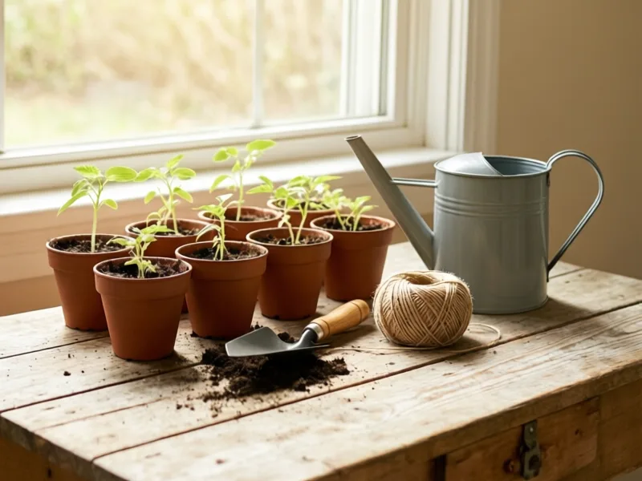

Sam Exemple
Je cultive des fleurs et j'écris sur les jardins.
Dernièrement

Semer en février : ce qui réussit sur un rebord de fenêtre
La lettre de la semaine.
Lire la lettreUne nouvelle conférence : la plate-bande qui se soigne toute seule
Trois dates ce printemps.
Voir les datesÀ propos
Je cultive des fleurs à couper sur une petite parcelle près d'Exempleville, et j'écris ce que le jardin m'apprend.
Un dimanche sur deux, j'envoie une lettre : quoi semer, ce qui a raté, ce qui fleurit.
Pour m'écrire :hello@example.com